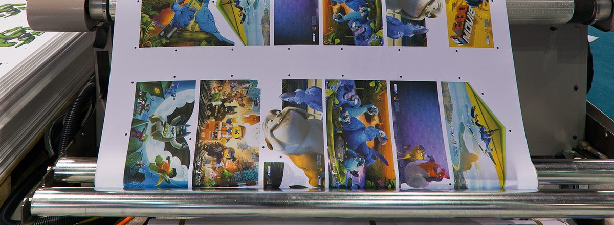
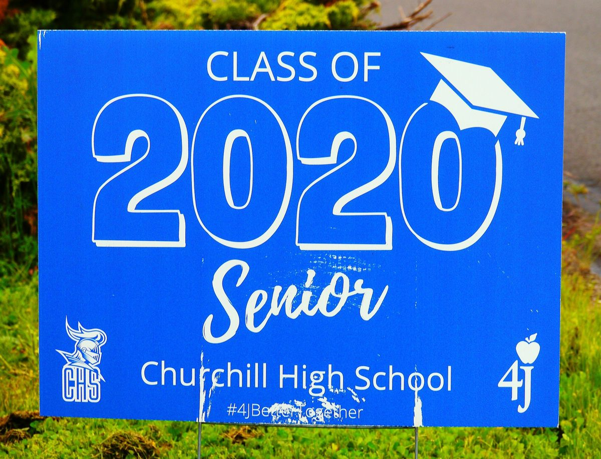

Trabajos Más Comunes

Producto principalBanners: Acabado e Instalación
Nuestro producto más importante tiene una guía completa: dobladillo, ojillos y cómo colgar un banner correctamente, de principio a fin. Todo lo de banners vive aquí.

Muy prontoLetreros de Jardín y Estacas H
Cómo poner las estacas H en los letreros de coroplast y colocarlos para que queden derechos y firmes.
 Muy pronto
Muy pronto
Rotulación de Vehículos: Instalación
Instalación de rotulación vehicular: preparación de la superficie, paneles, trabajo con la espátula y acabado de las orillas.
 Muy pronto
Muy pronto
Vinil Perforado: Instalación
Instalación de vinil perforado para ventanas: vidrio limpio, alineación y un acabado liso y sin burbujas.
Capacitaciones en este departamento
 Muy pronto
Muy pronto
El Terminado de un Trabajo
Laminación, montaje, recorte, ojillos y empaque: cómo un trabajo impreso se convierte en un trabajo terminado, listo para instalar o entregar.
 Muy pronto
Muy pronto
Preparación RTA
Dejar el vinil cortado listo para aplicar (Ready To Apply): descarte, enmascarado con cinta de transferencia y orillas limpias para que las letras nunca se levanten.
 Muy pronto
Muy pronto
Laminado de un Trabajo
Pasar las impresiones por la laminadora: carga del laminado, los ajustes que usamos y un acabado liso, sin arrugas ni velo plateado.
 Muy pronto
Muy pronto
Trabajo con Max Metal
Corte, manejo y acabado de paneles Max Metal: orillas limpias, sin rayones, listos para montar o enviar.
 Muy pronto
Muy pronto
Transporte de Aluminio
Mover letreros y piezas de aluminio sin doblarlos ni rayarlos: protección, apilado y amarre.
 Muy pronto
Muy pronto
Órdenes de Trabajo y la Pantalla del Piso
El trabajo de producción se sigue en SD-Orders (Asana), y la sección de Producción está en la pantalla del piso para todo el cuarto. Cambia el Status y la tarea se mueve sola. Cuando un trabajo termina: Ready for Install o Completed.
 Muy pronto
Muy pronto
Trabajos Tercerizados y Proveedores
Los trabajos con proveedores viven en la sección Outsource de SD-Orders. Cuando Diseño pone Outsource Files Ready, el Gerente de Producción hace el pedido y lo avanza cuando llega el material.
 Muy pronto
Muy pronto
Cómo Escribir Notas de Producción
El estándar del taller: las instrucciones van en las pestañas de Notas de la partida, en formato de oración. Las Notas de Producción se escriben después de la aprobación de la prueba, incluyendo fechas límite de trabajos urgentes.
Máquinas y Equipos
Laminadora / Montadora
Laminadora
Laminación de materiales.
Abrir página → Laminadora / Montadora
Laminadora / Montadora
Mesa de Montaje
Mesa de montaje para aplicar impresiones y gráficos sobre sustratos.
Abrir página → Soldadura de bannersSoldadora de Banners
Soldadura de dobladillos para un acabado de banners fuerte y limpio.
Abrir página →